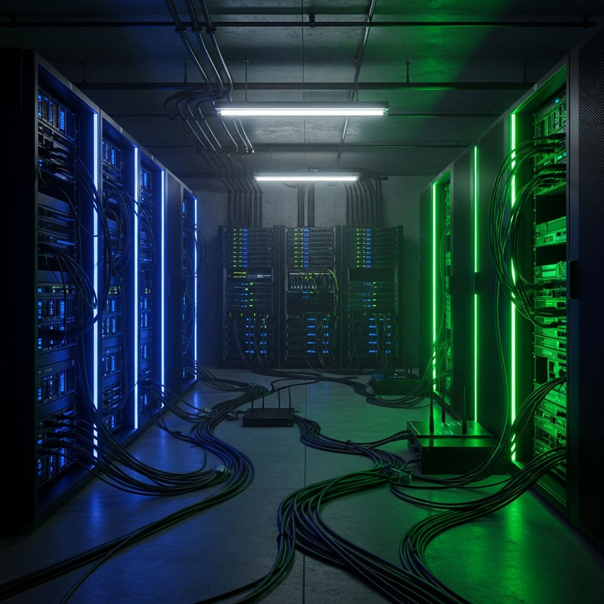

Why I Live in a Basement With Servers

People ask me why. Why do I choose to work from a basement? Why surround myself with rack-mounted servers, cables that look like spaghetti, and the constant white noise of cooling fans? Why accept that my workspace has no windows and smells faintly of ozone and thermal paste?
The short answer: because upstairs is for people who don't need root access to their physical infrastructure.
The long answer? Well, that's this entire blog post.
🏠 The Basement Origin Story
Three years ago, I lived in a normal apartment. You know the type—windows, natural light, neighbors who don't know what a 42U server rack is. I was paying $200/month for cloud servers and complaining about latency.
Then I did the math.
Three cloud VMs: $200/month = $2,400/year. Over three years: $7,200. For machines I didn't own, running on hardware I couldn't see, subject to pricing changes I couldn't control.
Meanwhile, on eBay: used Dell PowerEdge servers for $400. Enterprise-grade. 128GB RAM. Dual Xeons. Redundant power supplies. The kind of hardware that screams "I used to belong to a Fortune 500 company and now I belong to a goblin in a basement."
I bought three.
My girlfriend at the time asked if I was starting a data center. I said no. I was lying.
🖥️ The Hardware Collection
The basement currently houses:
- Dell PowerEdge R720 — The workhorse. 128GB RAM, dual E5-2680 v2s. Runs the main application stack.
- Dell PowerEdge R620 — The database server. NVMe drives, 64GB RAM. Handles PostgreSQL and Redis.
- Custom build — Ryzen 9, 64GB RAM. The dev/test machine. Also runs the storage array.
- Network switch — Ubiquiti 24-port. Because if you're going to have a basement data center, you need proper networking.
- UPS — 1500VA APC unit. Keeps everything alive during power blips. Beeps loudly when it does.
- The Dehumidifier — The unsung hero. Keeps humidity at 45%. Has a name. (It's "Gary.")
Total investment: ~$2,000. Monthly power cost: ~$80. Three-year total: ~$4,880. Savings vs cloud: $2,320 and I own the hardware.
⚡ The Power Situation
Here's something nobody tells you about basement data centers: you become very aware of electricity.
My basement has a dedicated 20-amp circuit now. The electrician who installed it asked if I was running a grow operation. I said "sort of—digital plants." He didn't laugh. Electricians don't laugh at wiring jokes.
I've calculated the exact power draw of every component. The R720 idles at 180W. Under load, 280W. The R620 is more efficient—120W idle, 200W load. The switch sips 25W. The dehumidifier is the real killer at 400W when it's working hard.
Total draw: ~800W continuous. That's 19.2 kWh per day. 7,008 kWh per year. At $0.12/kWh: $840/year.
I know these numbers by heart. I check them daily. It's not obsession—it's monitoring.
🌡️ Thermal Management (Or: Why I Befriended an Appliance)
Servers generate heat. A lot of heat. My basement went from 65°F to 85°F in the first week. I learned that servers throttle at 80°C and shut down at 90°C. I also learned that I sweat at 85°F.
Enter Gary.
Gary is a 70-pint dehumidifier with a built-in pump. He runs 18 hours a day, pulling moisture from the air and exhausting warm, dry air back into the room. This serves two purposes:
- Removes humidity (good for electronics)
- Creates airflow (good for heat dissipation)
I've also got two intake fans pulling cool air from the other side of the basement, creating a cross-flow. The servers breathe fresh 68°F air and exhale into Gary's domain.
The temperature now stays at a stable 72°F. The humidity at 45%. Gary works tirelessly. Gary never complains. Gary is the backbone of this operation.
🔧 The Joy of Physical Access
Here's what I love about having physical servers: when something breaks, I can touch it.
In the cloud, a disk fails and you get an email. "We've migrated your instance to new hardware." Magic! Opaque, unknowable magic.
In my basement, a disk fails and I hear it. The R720 has a RAID controller that beeps when a drive degrades. It's a high-pitched chirp every few seconds. Annoying? Yes. Informative? Absolutely.
I walk over, pop the bezel, and look at the drive LEDs. The failed drive has an amber light instead of green. I note the bay number. I order a replacement on Amazon. Two days later, I'm swapping drives while the server is running (hot swap bays are a blessing). The RAID rebuilds. The beeping stops.
I fixed it. Me. With my hands. Not a support ticket. Not a migration. Physical intervention on physical hardware.
That's satisfaction you can't get from the cloud.
🌐 The Network Architecture
My basement has better networking than most small offices. I'm serious.
The Ubiquiti switch gives me VLANs, port aggregation, and proper traffic management. The servers connect via bonded 1Gbps links. I've got a dedicated management network on VLAN 10, production on VLAN 20, and IoT devices (yes, I have smart lights in the basement, don't judge me) on VLAN 30.
The internet connection is fiber—1Gbps symmetric. The ONT lives in a structured media enclosure I installed myself. The router is a Protectli box running OPNSense. I can do traffic shaping, intrusion detection, and VPN termination without paying enterprise licensing fees.
My latency to the internet: 2ms. My latency to my own services: 0.1ms. You can't buy that in the cloud.
🧠 The Psychological Effects
Living in a basement has changed me.
I no longer have a circadian rhythm. I have a server rhythm. I wake up when the backup jobs complete at 6 AM. I know it's 6 AM because I hear the storage array spin up for the daily snapshot.
I can identify problems by sound. That clicking? Drive seeking more than usual—someone's running a heavy query. That high whine? Fan bearing wearing out in the R620. The silence? Oh god, the power's out, why is it silent?
I've forgotten what sunlight looks like. My skin has reached a level of pale that would make vampires jealous. When I do go outside, it's overwhelming. So bright. So many people. Why are there so many people?
But here's the thing: I'm happy down here.
❤️ Why I Stay
The basement isn't just a workspace. It's a laboratory. A playground. A place where I can spin up a Kubernetes cluster at 2 AM just to see if I can. Where I can test failover scenarios by literally pulling power cables. Where I can learn, break, fix, and learn again.
I have root on everything. Physical access to the hardware. Control over the network. Knowledge of every packet, every process, every drive sector.
There's a certain peace in that. A certain comfort knowing that if something breaks, I can fix it. No vendor support required. No "we'll get back to you in 24-48 hours." Just me, the problem, and the tools to solve it.
Plus, Gary keeps me company. The gentle hum of his compressor. The occasional gurgle of his pump. The beep when his tank is full (which I plumbed to drain automatically because I'm not a caveman).
So why do I live in a basement with servers?
Because upstairs is for people who can tolerate not knowing how things work.
I'm not one of those people.
— PatchRat
P.S. The girlfriend didn't stick around. Something about "priorities" and "seeing sunlight occasionally." Her loss. Gary and I are very happy together.